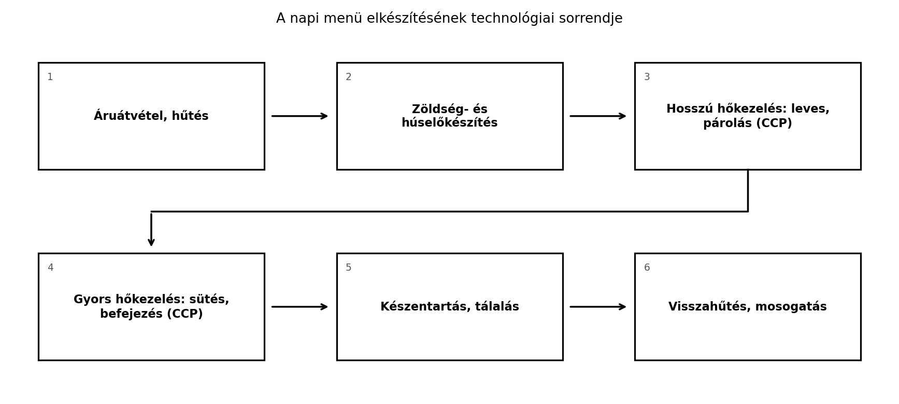

Reggel fél nyolckor érkezel a konyhára. Az étlapon ma háromfogásos menü szerepel: zöldségkrémleves pirított tökmaggal, sertésszűz sütve jázmin rizzsel, panna cotta erdei gyümölcsöntettel. Egyedül vagy. A vendégek fél egykor érkeznek. Ha nincs terved, először a desszertet állítod be, közben leég a leves, a húst későn kezded el, és a tálalás előtt kapkodsz. A munkaterv megmutatja, mit, mikor, milyen géppel és ki végezzen.
Képzeld el, hogy a menü elkészítése egy vasúti menetrend: minden vonatnak (műveletnek) van indulási és érkezési ideje, sínpárja (gép), mozdonyvezetője (munkaerő) és ellenőrzési pontja. Ha két vonat ugyanarra a sínre fut, ütközés lesz – a konyhában ez azt jelenti, hogy a sütőt egyszerre akarod használni a leves pirításához és a hús sütéséhez. A munkaterv a menetrend.
A folyamatábra a napi menü elkészítésének technológiai sorrendjét mutatja:

Az ábrán a lépések sorrendjét látod: először az áruátvétel és a hideg tárolás, utána az előkészítés, a hosszú hőkezelés, a gyors hőkezelés, a készentartás és tálalás, végül a visszahűtés és a mosogatás. A folyamatábra csak a sorrendet mutatja; azt, hogy mi fut párhuzamosan, és melyik gép mikor foglalt, a lenti időtengelyes munkaterv (Gantt-diagram) mutatja.
Minden sor egy gép vagy munkahely, a legalsó sor a szakács aktív munkája. A szürke sávok aktív műveletek, a sraffozott sávok a hűtőben vagy melegentartóban zajló tartást jelölik, a fekete rombuszok a CCP-ellenőrzéseket (a hőmérsékletek tanulási értékek, ellenőrizendő: HACCP-terv). Figyeld meg, hogy az egyetlen szakács aktív sávjai sehol nem fedik egymást: ez a „vasúti menetrend” ütközésmentessége. A HTML-kiadásban az öntet, a rizs és a sertésszűz kezdését csúszkával mozgathatod, és a kalkulátor jelzi az ütközést vagy a késést. A táblázatos részletek a 36.2.4 pontban találhatók.
Definíció. A munkaterv a napi menü elkészítésének időrendi táblázata. Tartalmazza a műveleteket, azok sorrendjét, kezdési és befejezési időpontját, a szükséges gépeket, eszközöket és munkaerőt, valamint az ellenőrzési pontokat.
Definíció. A technológiai sorrend az ételek elkészítéséhez szükséges műveletek olyan logikai lánca, amely a nyersanyag-előkészítéstől a tálalásig halad. A sorrendet a hőkezelési idők, a hűtési igények és a tálalási hőmérsékletek határozzák meg.
A munkaterv tipikus oszlopai:
| Időpont | Művelet | Eszköz/gép | Munkaerő | Ellenőrzés/CCP | Megjegyzés |
|---|---|---|---|---|---|
| 8:00–8:15 | Áruátvétel, zöldség ellenőrzése | Mérleg, hűtő | 1 szakács | Átvételi hőmérséklet | FIFO |
A táblázatkezelőben az időpontot két külön oszlopba is írhatod:
kezdés és befejezés. Ekkor a számított időtartamot képlettel kapod meg,
például =(C2-B2)*24*60, ahol B2 a kezdő, C2 a záró időpont;
így a különbség percben jelenik meg (az eredmény cellája számformátumú
legyen).
Továbbvitt eredmény. A munkaterv itt tanult szerkezetét – időpont, művelet, gép/eszköz, munkaerő, ellenőrzés – használjuk az A szakmai vizsga felépítése és az elméleti felkészülés alfejezetben a gyakorlati vizsga menükészítési tervénél.
Szabály. A munkatervben a hosszú hőkezelést (leves, párolás, nagyobb sütés) mindig előre kell időzíteni. A gyors hőkezelést (frissensült, befejező pirítás) a tálaláshoz közeli időpontra tesszük. A hideg desszerteket és a hideg előételeket lehetőleg előző nap vagy a nap elején készítjük el, és hűtőben tároljuk.
Higiénia. A munkatervben minden kritikus szabályozási pontot (CCP) jelölni kell. A hőkezeléshez tartozó maghőmérsékletet, a készentartás alsó hőmérsékletét és a gyors visszahűtés határértékét az üzemi HACCP-terv szerint írjuk be. Az itt megadott értékek tanulási értékek, amelyeket a kiadás előtt ellenőrizni kell (ellenőrizendő: NÉBIH-útmutató, üzemi HACCP-terv).
Eljárás. A munkatervet a következő számozott lépésekben készítsd el:
Kidolgozott példa. A mai menü: zöldségkrémleves pirított tökmaggal, sertésszűz sütve jázmin rizzsel, panna cotta erdei gyümölcsöntettel. Adagszám: 3. A desszertet előző nap készítjük el, és hűtőben tároljuk.
A munkaterv:
| Időpont | Művelet | Eszköz/gép | Munkaerő | Ellenőrzés/CCP | Megjegyzés |
|---|---|---|---|---|---|
| Előző nap 16:00–16:30 | Panna cotta alap elkészítése, formába öntése | Tűzhely, habverő, forma | 1 szakács | Hűtés 5 °C alá (ellenőrizendő) | Hűtőben éjszakán át |
| 8:00–8:15 | Áruátvétel, zöldségek és hús ellenőrzése | Mérleg, hűtő | 1 szakács | Átvételi hőmérséklet, csomagolás | FIFO, nyers és kész külön |
| 8:15–8:35 | Zöldségek mosása, tisztítása, szeletelése | Kés, deszka, mosogató | 1 szakács | Szemmel látható szennyeződés-mentesség | Nyers és kész eszköz külön |
| 8:35–9:00 | Sertésszűz konyhakészre alakítása, sózás, borsozás, hűtőbe tétel | Kés, deszka | 1 szakács | Hús hőmérséklete 5 °C alatt (ellenőrizendő) | Kézmosás nyers hús után; allergén-elkülönítés: zeller és tej külön eszközzel, külön jelölt edényben |
| 9:00–9:30 | Leves alap: zöldség pirítása, felöntés, forralás | Fazék, tűzhely, fakanál | 1 szakács | Forralás CCP: 100 °C (ellenőrizendő) | Lassú forralás |
| 9:30–10:00 | Leves puhulásig főzése | Fazék, tűzhely | 1 szakács | Forralás CCP: 100 °C (ellenőrizendő) | Fedő alatt |
| 10:00–10:20 | Leves turmixolása, ízesítése, sűrítés ellenőrzése | Botmixer, szűrő | 1 szakács | Készentartás CCP: legalább 63 °C (ellenőrizendő) | A botmixer fejét teljesen bemerítve kapcsold be és ki, működés közben ne emeld ki |
| 10:20–10:40 | Gyümölcsöntet elkészítése, hűtése | Tűzhely, botmixer, hűtő | 1 szakács | Hűtés 5 °C alá (ellenőrizendő) | A desszert hűtve marad |
| 10:40–11:20 | Készentartás: a leves legalább 63 °C-on, az öntet és a desszert hűtve, a nyers sertésszűz hűtőben | Melegentartó, hűtő | 1 szakács | Hőmérséklet-ellenőrzés (ellenőrizendő) | Hőkezelés nincs, a tételek szabályozott tartás alatt állnak |
| 11:20–11:40 | Rizs mosása, áztatása, majd főzése | Lábas, tűzhely | 1 szakács | Kóstolás, állag; melegen tartás legalább 63 °C (ellenőrizendő) | Főzés után fedő alatt, melegen tartva |
| 11:40–12:10 | Sertésszűz pirítása és sütése maghőmérsékletig, pihentetés | Sütő, serpenyő, hőmérő, vágódeszka | 1 szakács | Maghőmérséklet CCP: legalább 75 °C (ellenőrizendő) | Egyetlen hőkezelés; pihentetés 5 perc |
| 12:10–12:30 | Tálalás előkészítése: tányérok melegítése, köret adagolás | Tányérmelegítő, adagolókanál | 1 szakács | Tányérhőmérséklet, adagsúly | Mise en place |
| 12:30–12:40 | Tálalás: leves, főétel, desszert | Tálalóeszközök | 1 szakács | Tálalási hőmérséklet, adagok | A levest forrón, a desszertet hidegen |
A munkatervben a leves hosszabb főzése 9 és 10 óra között történik. A sertésszűz egyetlen hőkezelése és a rizs a tálaláshoz közelre került, a köztes időben a tételek szabályozott hűtés vagy melegen tartás alatt állnak, így nincs langyos állás. A desszert előző napon készült el, így a napi munkatervben csak az öntet és a tálalás szerepel.
Nagy létszámnál a munkaterv célja ugyanaz, de a mennyiségek, a munkaerő és a gépek kapacitása megváltozik. A 3 adagos munkatervet nem egyszerűen hússzal szorozzuk: a hőkezelési idő az edény méretétől, a hőterheléstől és a keverhetőségtől is függ. Az adagolási idő viszont nagyjából arányosan nő.
Összefüggés. A nagy tételű előkészítés időigénye közelítőleg a tömeggel arányos, de a nagyobb edényben a felmelegedés lassabb lehet. A hőkezelési időt mindig a tényleges mennyiségre és a hőkezelő berendezésre kell újra becsülni. A számításokban használt szorzók tanulási értékek, az üzemi munkatervben a saját kapacitásadatok a mérvadók (ellenőrizendő: üzemi gyakorlat).
Például 60 adagos menühöz a várható idő- és munkaerőigény:
| Művelet | 3 adag idő | 60 adag idő (becslés) | Munkaerő | Gépek/eszközök | Megjegyzés |
|---|---|---|---|---|---|
| Zöldség-előkészítés (gépi szeleteléssel) | 20 perc | 80 perc | 2 szakács | Kés, deszka, mosogató, gépi szeletelő | Kézzel 240 perc / 2 fő volna |
| Hús-előkészítés | 25 perc | 60 perc | 2 szakács | Kés, deszka, mérleg | Adagok pontos bemérése |
| Leves hőkezelés | 30 perc | 60 perc | 1 szakács | Üst, tűzhely, keverőlapát | Nagyobb edény, több idő |
| Sertésszűz elősütés (serpenyő) | 30 perc | 45 perc | 2 szakács | Sütő, serpenyő, hőmérő | Maghőmérséklet gyakori mérése |
| Rizs főzés | 20 perc | 50 perc | 1 szakács | Főzőüst, tűzhely | Tételes főzés vagy üst |
| Sertésszűz készre sütés (sütő) | 25 perc | 40 perc | 2 szakács | Sütő, hőmérő | Sütő teljes kapacitással |
| Tálalás | 25 perc | 60 perc | 3 szakács | Melegentartó, adagoló | Párhuzamos adagolás |
A fenti idők becslések: a nagy tételnél a gépek teljesítménye, a munkaerő gyakorlata és a konyha kialakítása erősen befolyásolja őket. Az üzemi munkatervben a saját HACCP-terv és a napi termelési tapasztalat alapján pontosítjuk.
A nagy létszámú munkatervben a kezdést legalább 1–2 órával korábbra kell hozni. Több munkaerő esetén a műveleteket szét kell osztani: egy ember a hideg előkészítést, másik a hőkezelést, harmadik az adagolást végzi. A gépek kapacitását is át kell gondolni: ha csak egy botmixer van, a leves pürésítése nem ütközhet a gyümölcsöntet készítésével.
Számítás. A nagy létszámú zöldség-előkészítés időigényét a következő képlettel becsülhetjük:
ahol a nagy létszámú idő (perc), a 3 adagos idő (perc), a nagy adagszám, a kis adagszám, a nagyobb tétel miatti időtöbblet aránya (tizedestörtben).
Például a zöldség-előkészítés 3 adaghoz 20 perc. A 60 adagos mennyiség hússzoros, de a nagyobb tétel miatt 20%-kal több időt számolunk:
Ez 8 órányi kézi munkaidő; két szakáccsal a kézi előkészítés átfutási ideje 240 perc. A képlet a kézi műveletek teljes munkaidejét adja meg, amit a munkaerő-számmal osztunk. A táblázatban gépi zöldségszeletelővel számolunk: ott a kézi 3 adagos idő nem skálázható, a mért idő 2 főre 80 perc (tanulási adat). Kézi előkészítésnél (két szakáccsal 240 perc) a kezdést a gépi tervhez képest 240 − 80 = 160 perccel, kb. 2 óra 40 perccel korábbra kell hozni.
Számítás táblázatkezelőben. A munkatervet érdemes táblázatkezelőben (például LibreOffice Calc vagy Excel) vezetni. Az oszlopok lehetnek: A: sorszám, B: kezdés, C: befejezés, D: művelet, E: gép/eszköz, F: munkaerő, G: ellenőrzés/CCP, H: megjegyzés. A nyomtatott munkatervben ezekből hat tömörített oszlopot hagysz meg.
A kezdési és befejezési időpontból a számított időtartam percben:
= (C2 - B2) * 24 * 60
ha a cellák időformátumúak. A magyar felületen a függvénynevek és az argumentumelválasztók eltérhetnek, ezért a pontos képletet a telepített programban ellenőrizd (ellenőrizendő: táblázatkezelő kézikönyv).
A mennyiségek átszámítása 60 adagra például: ha a B oszlopban a 3 adagos mennyiség grammban van, akkor a 60 adagos mennyiség:
= B2 * 20
és a nagy tételű időtöbbletet külön oszlopban százalékos szorzóval veheted figyelembe.
Gyakorlati útmutató: munkaterv készítése és végrehajtása 3 adagos menühöz
Cél. Készítsd el a fenti háromfogásos menüt 3 adagra, és közben tartsd be a munkaterv időpontjait, valamint a CCP-ellenőrzéseket.
Eszközök és anyagok. A menü nyersanyagai: zöldségek (sárgarépa, petrezselyemgyökér, zeller, hagyma, fokhagyma), sertésszűz, jázmin rizs, tejszín, tej, zselatin, cukor, vanília (a panna cotta alapreceptje: tej, tejszín, cukor, zselatin, vanília), gyümölcsök, tökmag, fűszerek, só, bors. Allergének: zeller (leves), tej (panna cotta, tejszín), esetleg kén-dioxid/szulfitok (öntet, ha bor vagy szárított gyümölcs kerül bele) – ellenőrizendő: tényleges receptúra, 1169/2011/EU II. melléklet. Eszközök: tűzhely, sütő, hűtő, botmixer, mérleg, maghőmérő, kések, deszkák, fazék, serpenyő, lábas, tálalóedények, tányérok.
Biztonsági korlát. Ezt a műveletet tankonyhán vagy oktatói felügyelettel gyakorold; otthon csak a leírt biztonsági feltételekkel. A botmixer fejét kikapcsolt állapotban merítsd teljesen a levesbe, és csak így kapcsold be; működés közben ne emeld ki, kiemelés előtt kapcsold ki. A lábas legfeljebb kétharmadig legyen tele, és ne a tűzön, hanem stabil helyen pürésíts (vagy vedd takarékra), mert a forró fröccsenés égési sérülést okoz. A sütő forró ajtaját óvatosan nyisd, a gőz kifelé áramlik.
Higiéniai előkészület. Moss kezet, vegyél fel tiszta kötényt, hajhálót. Fertőtlenítsd a munkafelületet. Készíts külön deszkát és kést a nyers húshoz, és külön eszközöket a kész ételekhez. A nyers hús után mindig moss kezet.
Lépések:
Ellenőrzési pontok. Minden CCP-nél mérd meg a hőmérsékletet: leves forralás, sertésszűz maghőmérséklete, készentartás, hűtés. A hűtő hőmérsékletét naponta többször ellenőrizd. Az adagsúlyokat mérlegeld: leves 250 ml, főétel 150 g hús + 120 g rizs, desszert 150 g (ellenőrizendő: receptúra szerint).
Dokumentálás. Jegyezd fel a munkatervben a CCP-mérések értékét, időpontját, aláírásodat. Ha eltérést tapasztalsz, írd le a helyesbítő tevékenységet is.
A munkatervet és a kész ételeket is ellenőrizd. A munkaterv akkor jó, ha:
A kész ételek minőségi követelményei:
Egy családi rendezvény konyháján a szakács 60 adagos menüt készített. A munkatervben a levest és a főételt is 19:00-ra írta, a desszertet 19:30-ra. A sütő kapacitását nem ellenőrizte: a sertésszeletek befejező sütése és a köret melegítése egyszerre kellett volna, de a sütőbe csak az egyik tepsit tudta betenni. A leves nem volt kész, mert a nagy üstben lassabban forrt fel. A desszertet nem hűtötte le időben, mert a hűtőt a zöldségek foglalták el. A tálalás 35 percet csúszott. A tanulság: a munkatervben a gépek kapacitását, a nagyobb edény hőkezelési idejét és a hűtőkapacitást is tervezni kell, nemcsak a mennyiségeket.
A válaszokat a Megoldások elején találod.
1. feladat (A) Nevezd meg a munkaterv hat tömörített oszlopát.
2. feladat (A) Számítsd ki, mennyi időt vesz igénybe 60 adag zöldség-előkészítés, ha 3 adaghoz 12 perc, és a nagyobb tétel miatt 20%-kal nő az idő. Az eredményt írd át óra-perc formába.
3. feladat (B) Állítsd technológiai sorrendbe a következő műveleteket a fenti menühöz: tálalás, sertésszűz sütése, panna cotta elkészítése, leves pürésítése, zöldség-előkészítés.
4. feladat (B) Számítsd ki a napi nettó munkaidőt 3 adagra a kidolgozott példa munkatervéből (az előző napi desszertkészítést ne számold). Az egyes műveletek időtartama: áruátvétel 15 perc, zöldség-előkészítés 20 perc, húselőkészítés 25 perc, leves alap 30 perc, leves főzése 30 perc, leves pürésítés 20 perc, öntet készítés 20 perc, rizs főzés 20 perc, sertésszűz sütése 30 perc, tálalás előkészítés 20 perc, tálalás 10 perc. Add össze, és írd át óra-perc formába.
5. feladat (C) Készíts vázlatos munkatervet 3 adag gulyásleves, marhapörkölt és túrógombóc menühöz. Jelöld a CCP-ket, a gépeket és a munkaerőt.
6. feladat (D) Táblázatkezelőben készítsd el a 3 adagos menü munkatervét. Írd be a kezdési és befejezési időpontokat, az időtartamot képlettel számítsd ki, és ellenőrizd kézi számolással is. A munkatervet készítsd el a vizsgafelkészüléshez használható formában.
Önellenőrzés – válaszok:
=(C2-B2)*24*60, ahol B2 a
kezdő időpont, C2 a záró időpont. Az eredmény percben jelenik meg, ha a
cella számformátumát beállítod.1. feladat megoldása (A). A hat oszlop: időpont, művelet, eszköz/gép, munkaerő, ellenőrzés/CCP, megjegyzés.
2. feladat megoldása (A). Adott: 3 adaghoz 12 perc, 60 adaghoz húszszoros mennyiség, 20%-os időtöbblet. Keresett: 60 adag időigénye.
Átváltva: 288 perc = 4 óra 48 perc. Ez egy ember teljes munkaideje; a munkatervben ezt több munkaerőre osztjuk.
3. feladat megoldása (B). A helyes sorrend: (1) panna cotta elkészítése (előző nap vagy nap elején); (2) zöldség-előkészítés; (3) leves pürésítése (a főzés után); (4) sertésszűz sütése közvetlenül a tálalás előtt (egyetlen hőkezelés); (5) tálalás. A leves ízesítése a pürésítés után, a köret és a sertésszűz sütése a tálalás előtt.
4. feladat megoldása (B). Összeadjuk:
15 + 20 + 25 + 30 + 30 + 20 + 20 + 20 + 30 + 20 + 10 = 240 perc.
Átváltva: 240 perc = 4 óra. Ez a nettó tevékenységi idő; a munkatervben a várakozásokkal együtt hosszabb, hiszen a hőkezelés közben más műveletet is végezhetsz.
5. feladat megoldása (C). Vázlatos munkaterv 3 adagra:
| Időpont | Művelet | Gép/eszköz | Munkaerő | CCP | Megjegyzés |
|---|---|---|---|---|---|
| Előző nap | Túrógombóc előkészítése, formázás, hűtés | Lábas, kanál, hűtő | 1 szakács | Hűtés 5 °C alatt | Főzni tálalás előtt kell |
| 8:00–8:30 | Hús és zöldség előkészítése a gulyáshoz és pörkölthöz | Kés, deszka | 1 szakács | Nyers hús hőmérséklete 5 °C alatt | |
| 8:30–10:30 | Gulyásleves és marhapörkölt párhuzamos főzése puhulásig (két főzőhelyen) | Fazék, lábas, fedő, tűzhely | 1 szakács | Forralás CCP: 100 °C; hús maghőmérséklete 75 °C felett, puhulás ellenőrzése (ellenőrizendő) | Lassú tűzön, időnként keverve |
| 10:30–11:00 | Túrógombóc főzése | Lábas, forró víz | 1 szakács | Újraforralás CCP | Adagonként főzve |
| 11:00–11:30 | Készentartás, tálalás előkészítés | Melegentartó, tányérok | 1 szakács | Készentartás legalább 63 °C (ellenőrizendő) | |
| 11:30–12:00 | Tálalás | Tálalóeszközök | 1 szakács | Tálalási hőmérséklet |
Allergének (ellenőrizendő: tényleges receptúra): glutén és tojás (túrógombóc), tej (túró, tejföl), zeller (gulyás); a tálalásnál az allergénkártyát és az elkülönített eszközöket is ellenőrizd.
6. feladat megoldása (D). A táblázatkezelőben
készítsd el az oszlopokat: A: sorszám, B: kezdés, C: befejezés, D:
művelet, E: gép/eszköz, F: munkaerő, G: CCP, H: megjegyzés. Írd be az
időpontokat. A D oszloptól jobbra egy új oszlopba írd az időtartam
képletét: =(C2-B2)*24*60. A képletet másold le a többi
sorra is. Ellenőrzés kézzel: például az áruátvétel 8:00-tól 8:15-ig
tart, ami 15 perc; a képletnek ugyanezt kell adnia. A
vizsgafelkészüléshez ezt a táblázatot nyomtasd ki, és gyakorold az
időpontok betartását.
A napi menü elkészítéséhez munkatervet készítünk. A munkaterv a műveleteket időrendben, gépekkel, eszközökkel, munkaerővel és ellenőrzési pontokkal rendeli egymáshoz. A technológiai sorrendben először az előkészítés, majd a hosszú hőkezelés (leves, párolás), aztán a gyors hőkezelés (sütés, befejezés), végül a készentartás és tálalás következik. A hideg desszerteket előző nap vagy a nap elején készítjük el. Minden hőkezelési CCP-hez maghőmérőt, a készentartáshoz hőmérőt írunk elő. A 3 adagos tervet nagy létszámra nemcsak a mennyiségekkel, hanem az idővel és a munkaerővel is átdolgozzuk. A táblázatkezelőben a kezdő és záró időpontból képlettel számítható az időtartam. A munkaterv szerkezetét – időpont, művelet, gép/eszköz, munkaerő, ellenőrzés – használjuk az A szakmai vizsga felépítése és az elméleti felkészülés alfejezetben a vizsga menükészítési tervéhez.
A fejezet a klasszikus konyhatechnológiai gyakorlatra, a HACCP-alapú munkaszervezésre és a táblázatkezelő általános használatára épül. A konkrét hőmérsékleti határok (leves forralás 100 °C, készentartás 63 °C felett, hűtés 5 °C alatt, sertésszűz maghőmérséklet 75 °C) tanulási értékek, amelyeket a NÉBIH-útmutatók és az üzemi HACCP-terv alapján ellenőrizni kell (ellenőrizendő: NÉBIH-útmutató, HACCP-terv). A nagy létszámú időbecslések tanulási példák, az üzemi munkaerő- és gépkapacitás szerint pontosítandók (ellenőrizendő: üzemi gyakorlat). A táblázatkezelő pontos képlete a telepített program nyelvétől és verziójától függ (ellenőrizendő: program kézikönyv). A vizsgára vonatkozó időkeret a hatályos szakképzési jogszabály és vizsgaszabályzat szerint eltérhet (ellenőrizendő: aktuális szakképzési jogszabály).